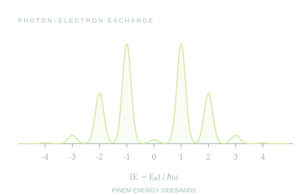
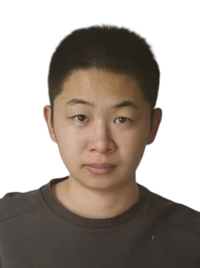
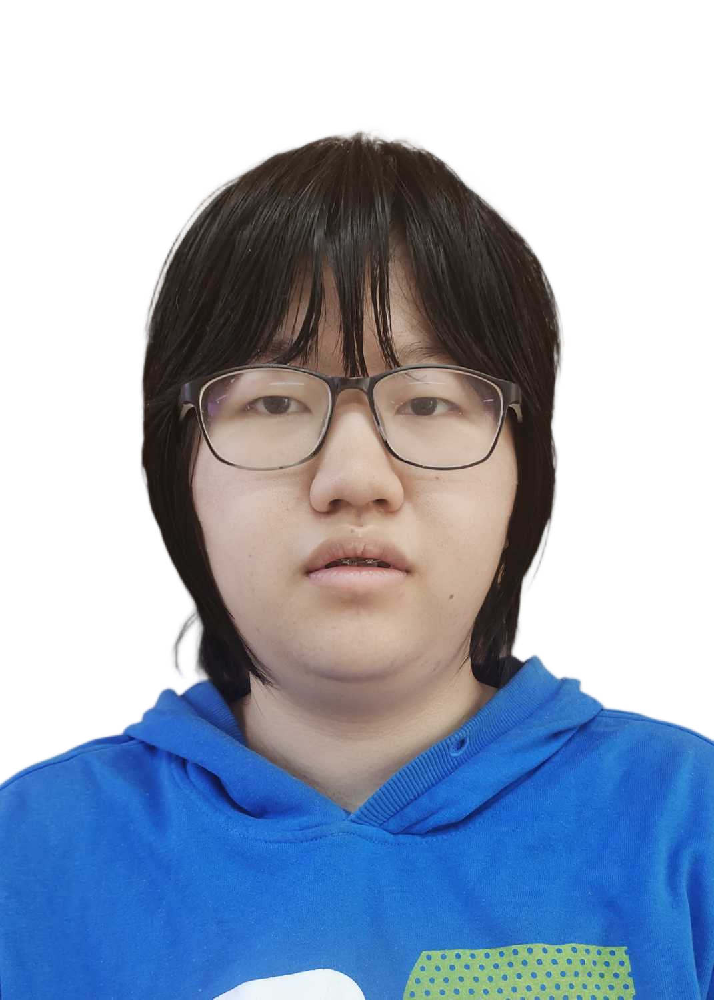
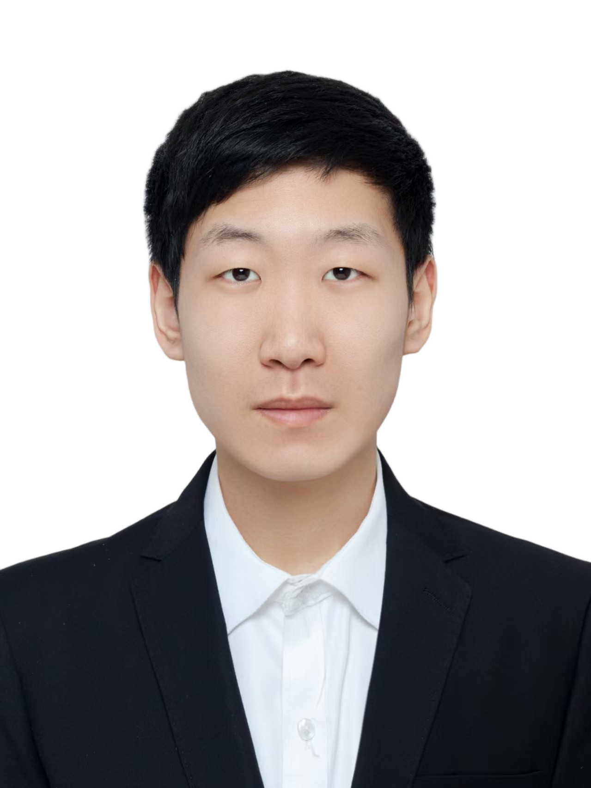
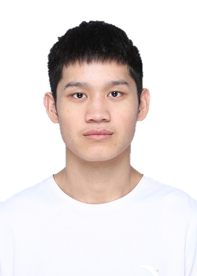
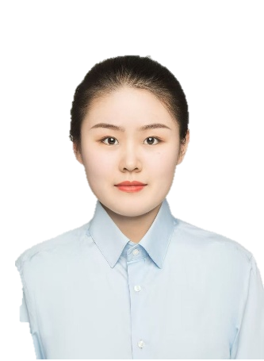

超快、强场与量子光学
自由电子加速（DLA）与辐射（FEL）、光子诱导近场电子显微镜（PINEM）、阿秒动力学调控与量子弱测量。

光与自由电子课题组
在强场与量子领域中，探索光和自由电子的相互作用。
我们关注电子与光场之间能量、动量和信息的可控转移，探索电磁相互作用的深层结构。理论与实验兼修，从量子测量、拓扑与时空调控，走向自由电子量子光学。
自由电子加速（DLA）与辐射（FEL）、光子诱导近场电子显微镜（PINEM）、阿秒动力学调控与量子弱测量。
Floquet 工程、自由电子合成维度、光子时空晶体、动量带隙孤子与非线性时空动力学。
Weyl 半金属与量子输运、量子反常、自由电子凝聚态物理，以及神经算子和 Koopman 算子。
Laser & Photonics Reviews, e71754 (2026)
Changying Li, Li Zhang, Xin-Ning Tian, Dingguo Zheng, Weishi Wan, Xiaoping Liu, Yiming Pan
让光多跑几圈，电子能否多加速一程？这项设计探索回收光场来延长电子加速过程。
Physical Review Letters 137, 066303 (2026)
Danni Chen, Changying Li, Jinze He, Huaiqiang Wang, Yiming Pan
一边增长、一边衰减，波包也能找到节奏：k-gap 晶格中的 Bloch 振荡展现了有趣的自平衡机制。
Nature Communications (2026)
Yiming Pan, Ruoyu Yin, Yongcheng Ding, Huaiqiang Wang, Daniel Podolsky, Bin Zhang
自由电子也能被光“拴住”？理论研究探索扭曲光场中的拓扑束缚态，让飞行中的电子波包保持局域。
Laser & Photonics Reviews, e71600 (2026)
Yiming Pan, Danni Chen, Xiaoxi Xu, Zhaopin Chen, Huaiqiang Wang
在组成员参与：陈丹妮
把动量带隙当作放大旋钮，看看它如何帮助固体发出更强的高次谐波。
助理教授 · 研究员 · 独立 PI · 博士生导师
2023 年起任职于上海科技大学物质科学与技术学院、变革性科学中心。研究兴趣包括自由电子量子光学、时变与拓扑光子学，以及强场和量子光物质相互作用。
自述：青椒一枚，物理小白，做梦时是会飞的青蛙？

博士研究生
光孤子、光子晶体
参与成果 · 6 篇 ↗
硕士研究生
Floquet 工程、拓扑
参与成果 · 2 篇 ↗
硕士研究生
固体高次谐波、动量带隙
参与成果 · 3 篇 ↗
硕士研究生
调制器、实验平台搭建
参与成果 · 3 篇 ↗
硕士研究生
光子时间晶体、量子模拟
参与成果 · 1 篇 ↗
联合培养博士研究生 · 上海光机所
超快透射电子显微镜
参与成果 · 1 篇 ↗成员信息据 2026 年 6 月课题组介绍整理，按最新在组情况更新。
已毕业博士生
等离子激光、光子时间晶体
已赴海外从事博士后研究
孙嘉祥 · 本科生（实验室搭建、声致发光量子模型）
吴泽一 · 本科生（实验室搭建、量子光学教学平台）
宋屿珩 · 本科生（COMSOL 仿真、超快电子量子调控）
乐子萱 · 本科生（自由电子卷积神经网络、时空斑图生成）
姬超燃 · 本科生（PDENet 数据库搭建）
杨家芃 · 原硕士研究生
2026 年转组
谭湘婷 · 原组内成员
2023 年入组，后转组
沈文淏 · 研究助理 · 2023.09—2024.01
后赴加拿大麦吉尔大学读研
范止维 · 研究助理 · 2024.02—2024.05
后赴英国 Newcastle University 从事博士后研究
学术合作：Technion、Tel Aviv University、Erlangen、中科院物理所、上海光机所、上海理工大学等。
“Free electron and photon can exchange energy, momentum, and even information at the quantum level.”— Yiming Pan · ShanghaiTech
To educate college students & kids: The first principle for me is to admit my stupidity in front of them.
To teach graduate students & postdocs: My job is to support them in achieving success in science and technology.
To teach the public: The most critical aspect of disseminating information to the public is determining: What is NOT science!
Equally access to education to all individuals without discrimination.
参与本科生与研究生培养、CUPT 指导、书院导师工作及校园开放日；通过 B 站、知乎物理专栏、科普直播和科技节活动，分享对物理的理解与好奇。
B 站 · 物理与科普走进视频里的物理世界欢迎对物理、光学、电子信息与工程感兴趣的同学。
尤其欢迎愿意动手探索电子枪光发射、量子光学探测、
飞秒泵浦探测、电学调控与测试的同学加入。
感兴趣的研究生与博士生请提前联系导师；
组内通常有 2–3 个月的交流与面试过程。
上海科技大学 · 物质科学与技术学院
7 号楼 211 室
(+86) 19821952722